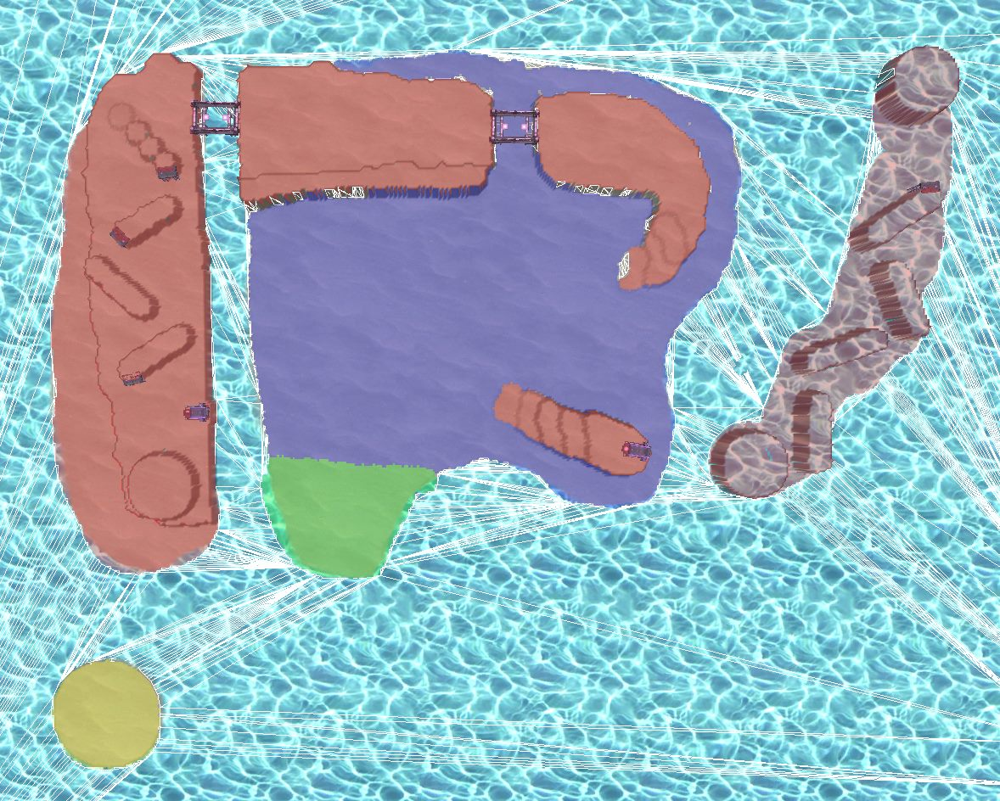
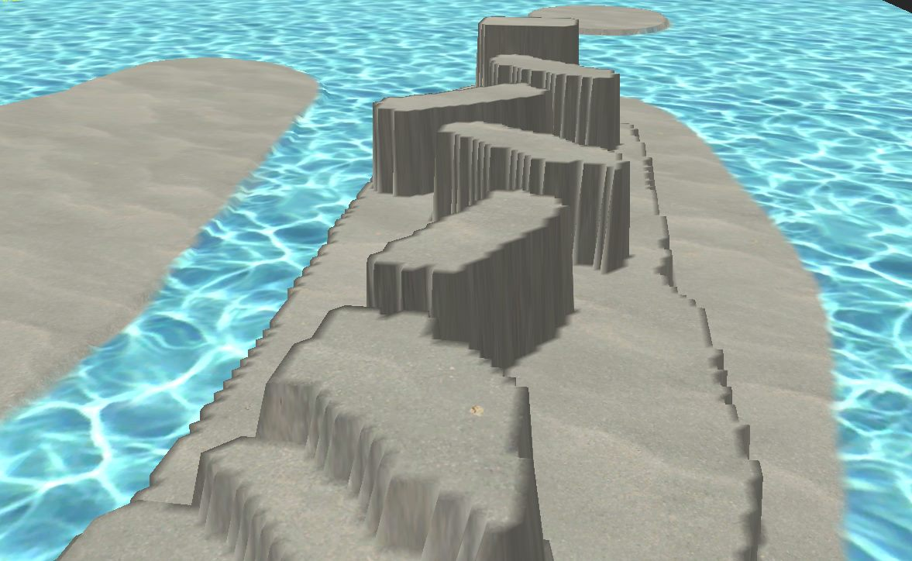
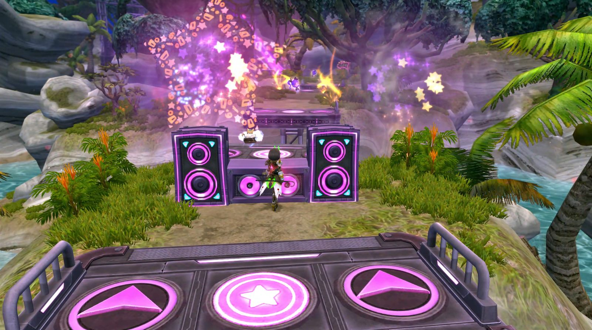
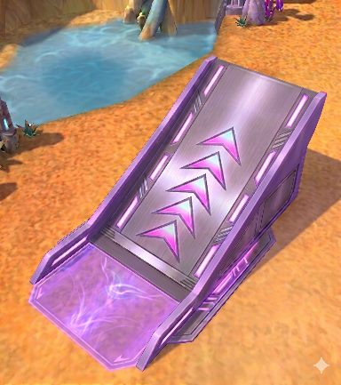
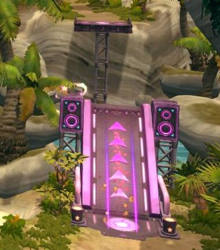
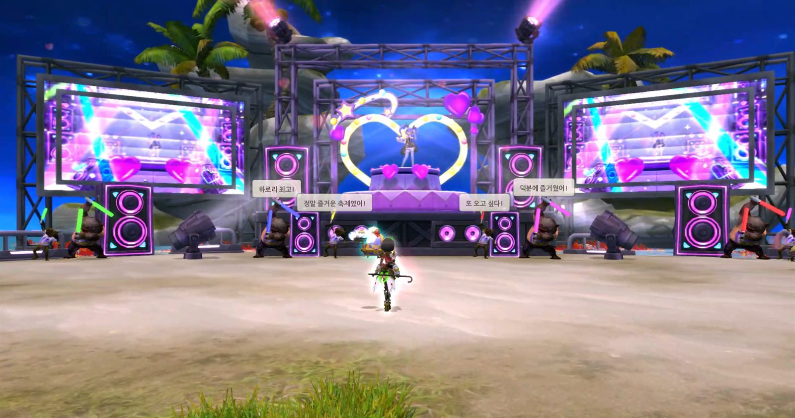

- GAME
- 드래곤네스트
- FORMAT
- 1인 · 2분 · 일일 1회
- LIVE
- 2026.10.07 – 11.05
- ROLE
- 기획 단독 (기획부터 배치까지)
한 달 내내 같은 루트를 도는 이벤트
이전 하로리 이벤트(레이싱)는 조작이 쉽고 속도감이 좋았지만, 이벤트 기간 내내 고정된 루트를 반복했습니다. 장애물인 극성 팬은 피하기만 하는 방해 요소였습니다. 쉬운 조작과 속도감은 살리고, 반복되는 루트와 피하기만 하는 장애물을 바꾸는 것이 목표였습니다.
코스 대신 섬 전체를 쓰는 수집 레벨
중앙 일반 존은 주행을 막는 프랍을 줄인 넓은 평지로, 외곽 스페셜 존은 고저차와 점프 구간으로 만들었습니다. 플레이어는 2분 동안 굿즈를 모으며 스스로 동선을 짜고, 시간대마다 나오는 상인 부하 두 마리를 모두 쓰러뜨리면 스페셜 존이 열립니다.

피하던 장애물을, 부딪힐수록 이득인 자원으로
부스트 상태로 극성 팬에 부딪히면 팬이 기절하고 부스트가 연장됩니다. 방해 요소였던 팬이 부스트를 이어 가는 발판이 됩니다.
위치는 고정, 종류와 등장은 랜덤
랜덤이 지나치면 운이 실력을 덮고, 없으면 한 달 내내 같은 판이 됩니다. 기믹이 나오는 위치는 고정해 맵을 익힐수록 동선이 좋아지게 하고, 종류와 등장 여부는 랜덤으로 두어 매 판 다른 판단을 하게 했습니다.
조작은 요구하되, 실패는 가볍게
- 발판 간격 더블 점프로는 넉넉히 닿고, 일반 점프로는 아슬아슬하게 닿지 않는 거리
- 진입 통제 스페셜 존 언덕은 더블 점프로도 못 오르게 높이고, 상인 부하로 연 다리·점프대로만 진입
- 주행 동선 동선 가운데에는 충돌 프랍을 두지 않고, 야자수처럼 큰 프랍은 외곽과 언덕 가장자리에만 배치
- 카메라 플레이어 뒤가 지형에 막혀 화면이 급격히 당겨지지 않도록 배치 단계에서 공간 확보


점프대를 다시 만든 이유
기존 점프대는 실패가 잦고 착지 위치가 크게 틀어졌습니다. 바닥에 인식 범위를 표시하고, 양옆 난간으로 방향을 고정하고, 경사로에 화살표를 넣은 신규 프랍을 요청했습니다. 글로 전하기 어려운 형태는 생성형 AI로 만든 콘셉트 이미지를 요청서에 붙여 전달했습니다.


기획부터 배치까지 직접 한 일
아트(모델링·애니메이션·폴리싱·최적화)와 프로그래머(트리거 API) 업무를 뺀 나머지를 혼자 맡았습니다. 괄호 안은 언리얼 기준으로 비슷한 기능입니다.
| 지형·배치 | 브러시 지형 편집(랜드스케이프), 프랍 배치(액터 배치) |
| 객체별 트리거 | 아이템 브로큰 효과, 점프대 발사 등 효과를 객체마다 적용(블루프린트), 스포트라이트 등 라이트 이펙트 부착 |
| 몬스터 | 아트팀 모델링·애니메이션으로 액트 구성, 액션·이펙트·AI 제작. 이벤트 몬스터 전부 직접 제작 |
| 맵 제어·UI | 입장·퇴장, 스테이지 시작·종료, 점수·게이지 UI와 상승, 낙하 시 위치 재배치 |
| 보상·연출 | 보상 테이블 연결, 튜토리얼, 몬스터·아이템 위치, 카메라, 대사, 불꽃놀이, BGM |
먹은 아이템과 다른 효과가 나가던 문제
엔진이 오래돼 아이템 객체마다 점수와 효과를 하나씩 부여해야 했습니다. 작업량을 줄이려고 ‘이 종류의 아이템이면 해당 효과 발동’으로 트리거를 묶었더니, 다른 종류의 점수 아이템을 먹었을 때 앞서 먹은 아이템의 효과가 발동했습니다. 종류별 묶음을 버리고 객체마다 점수와 효과를 따로 설정해 해결했습니다.
라이브 이후

- 의도대로 된 것 일부러 매우 쉽게 만든 난이도로 플레이어들이 쉽게 적응해 보상을 받아 갔습니다. 2차 하로리와 다른 잔잔한 늦여름 노을 분위기, 화살표·유도 불꽃놀이·상단 자막으로 이끄는 스페셜 존 안내, 적을 부딪혀 날려 버리는 가벼운 재미가 의도대로 전달됐습니다.
- 아쉬운 것 스페셜 존을 마치면 플레이어를 하늘로 날려 불꽃놀이를 보여 주고 싶었지만, 섬 전체를 비춰 프레임이 떨어진다는 이유로 컷신 후 순간이동으로 바꿨습니다.
- 다음에 바꿀 것 부스트 규칙을 웹페이지·튜토리얼·플레이 중 안내에 넣고 시작 지점에 부스트 아이템까지 뒀지만 게시판에 질문이 올라왔습니다. 핵심 규칙은 강제 1회 튜토리얼로 직접 해 보게 하겠습니다.